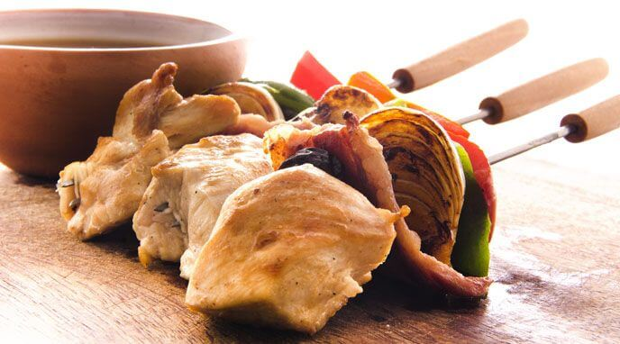

Brochette de pollo

Descripcion
Preparar esta receta de brochettes es simple y en pocos minutos se logra un
plato diferente. Se pueden hacer al horno, a la parrilla o a la plancha,
y variar infinitamente los ingredientes.
Para que la carne de pollo quede bien sabrosa, es muy importante
pasarla por Provenzal Alicante: el perejil y el ajo se complementan
a la perfección ofreciendo un sabor a hierbas pero con un toque picante y aromático.
Ingredientes
- 2 Pechugas de pollo
- 1 Cucharadita de provenzal
- 2 Cebollas
- 2 Pimientos rojo
- 200 Gramos de panceta ahumada
- 12 Ciruelas secas sin carozo
- 1 Pizca de sal
- 1/4 cucharadita de pimienta negra molida
Preparacion
- Cortar las pechugas de pollo en cubos y pasalos por Provenzal Alicante.
- Cortar la panceta en trozos medianos.
- Pelar las cebollas y cortarlas de un tamaño similar a la panceta.
- Limpiar los pimientos retirándoles las semillas y nervaduras y cortarlos como a las cebollas.
- Condimentar el pollo con sal y Pimienta Negra molida Alicante.
- Armar las brochettes colocando los ingredientes de la siguiente forma:
pimiento, cebolla, panceta, pollo, ciruela. Repetir el orden hasta cubrir el palito de brochette,
con cuidado de dejar unos centímetros en las puntas para poder manipularlos luego.
Es muy importante pasar los palitos del brochette por aceite antes de pinchar los ingredientes:
ayudará a que se desprendan mejor al momento de consumirlos.
- Una vez preparados todos los brochettes colocarlos en una asadera con un poco de aceite y
cocinarlos en horno a temperatura media durante unos 30 minutos aproximadamente
(también se los podrá hacer en la parrilla, el tiempo de cocción aproximadamente es el mismo),
se recomienda ir rotándolos para obtener una cocción pareja.
- Una vez dorada la carne ya estarán listos para servir.